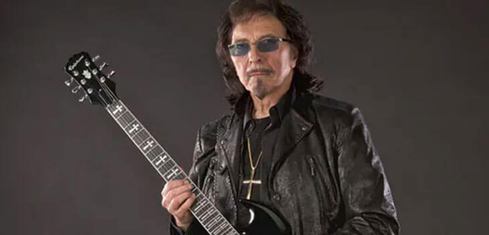

Ozzy Osbourne é o carismático e lendário vocalista do Black Sabbath.
Conhecido como o "Príncipe das Trevas", Ozzy se destacou por sua performance teatral e voz distintiva.
Sua presença de palco e energia cativante ajudaram a consolidar o Black Sabbath como uma das maiores bandas de rock de todos os tempos.
Além de sua carreira solo bem-sucedida, Ozzy também é conhecido por sua personalidade excêntrica e pelas histórias de excessos que marcaram sua vida.

Tony Iommi é o guitarrista fundador do Black Sabbath e uma das figuras mais influentes na história do heavy metal.
Sua técnica única de tocar guitarra e o som pesado e sombrio que ele criou foram fundamentais para o desenvolvimento do gênero.
Iommi é conhecido por suas riffs poderosas e por ter criado uma sonoridade distinta que definiu o som do Black Sabbath.
Sua habilidade como compositor e sua determinação para continuar tocando, mesmo após um acidente que causou a perda de ponta dos dedos, são admiráveis.
Terrence "Geezer" Butler é o baixista e principal letrista do Black Sabbath. Suas letras sombrias e introspectivas contribuíram para a atmosfera única e pesada das músicas da banda.
Butler também é conhecido por suas habilidades técnicas no baixo, criando linhas de baixo pesadas e marcantes que complementavam perfeitamente as guitarras de Iommi.
Sua influência no gênero é inegável, e sua parceria criativa com Iommi foi fundamental para o som característico do Black Sabbath.
Bill Ward é o baterista original do Black Sabbath e contribuiu com seu estilo de bateria único para o som da banda.
Sua habilidade em alternar entre ritmos pesados e cadências mais complexas deu uma dinâmica especial às músicas do grupo.
Além de seu talento musical, Ward também é conhecido por seu senso de humor e personalidade descontraída, que contribuíram para a dinâmica da banda.